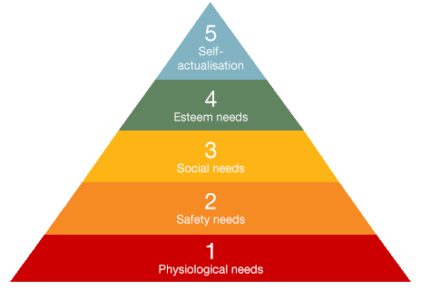

Technical Skills
+
Improvables
I believe we all have the ability to acquire skills through trainings.
Co-powerment, where people are presented the necessary tools to achieve their potential. -- living to be a billionaire, positively influencing the lives of a billion people.
Meant to be shared
My Transferable Skills
List is constantly growing.
I have had the opportunity to learn many skills and become proficient in various analytical tools.
Create, create, create, tinker, create again.
Presentations, educator, connector
Problem Solver
Social solutions and impact statements, outcomes, indicators, measures, collective impact data, monitor and evaluation plans, project management.
Open Oakland Member
Group facilitation Certificate
Programs:
Statistics: SPSS, STATA, R, Excel, D3, SQL
Mapping: ArcGIS, QGIS, Google Earth, Google Maps, Leaflet, CartoDB, Mapbox, OpenStreetMap, Tableau
Group facilitation:
Data Vizualization (both paper and interactive): Maps, Charts, Graphs, and infographics
Improvables
We all have weaknesses to acknowledge and work to resolve.

The self help books, programs, public seminars, represent a 10 billion dollar per year industry in the United States alone. We are a nation of people that are constantly attempting improve themselves. Personally, I am working on making my writing and editing skills a daily part of my life and I understand the message from so many, that practice makes perfect.
While working on program design, management, and evaluation for the Bicis Del Pueblo project I have learned the need to continually reassess my skills as a leader and manager. One of my main goals is to improve as a manager and insure that the project meets all of its goals.
I am taking advantage of some of the numerous resources available to receive Technical professional development in SQL, APIs, and other data management techniques that allow the use of open data. In that same vein I have looked to improve my art and graphic design skills as to best create influential data visualizations.
I have been adverse to accepting my place as a leader and have recently found the necessity to enter that space with confidence in my abilities to lead, but still acknowledging my own limitations and limit the number of tasks that I can do well and not all the duties that I am capable of doing.